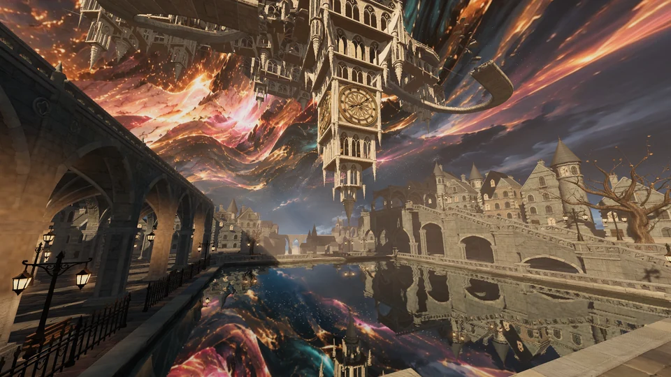
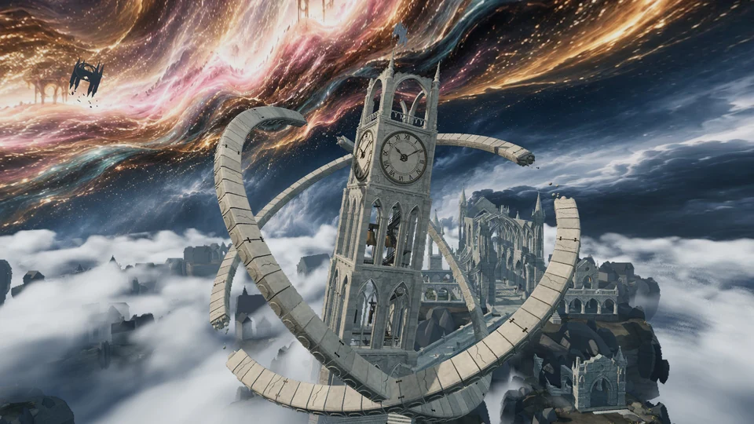
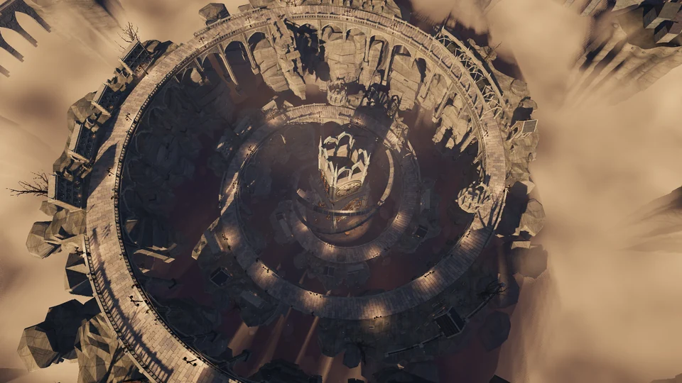
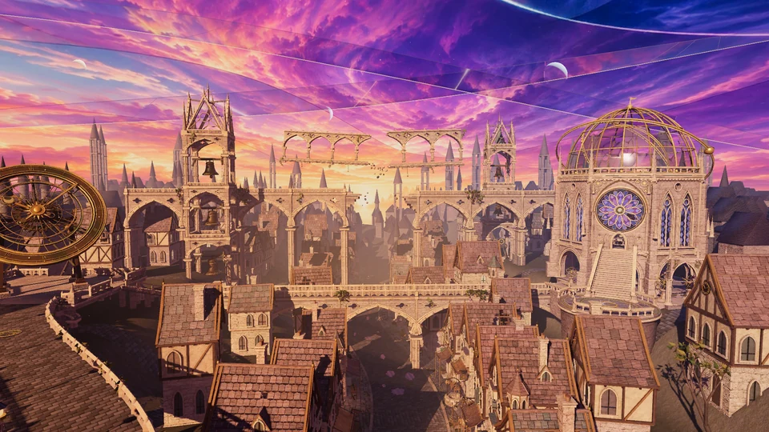

倒悬双城
贴着镜池看两岸倒影，再飞到头顶那座城的钟面前。
四座可以走进去的城。从镜池水面、雾中码头、地下长街，到日夜交界的河谷。任选一座在线游览，也可以下载单个 HTML，断网后用支持 WebGL2 的浏览器打开。

贴着镜池看两岸倒影，再飞到头顶那座城的钟面前。

从旧码头飞过断环。拖动星潮滑杆，看雾色和天空一起变换。

从井沿俯望环形拱廊，再顺着送葬道，下到铜日轮所在的深处。

从桥头横移，看两截石廊错开，随后穿过旧市集，登上东岸星历院。